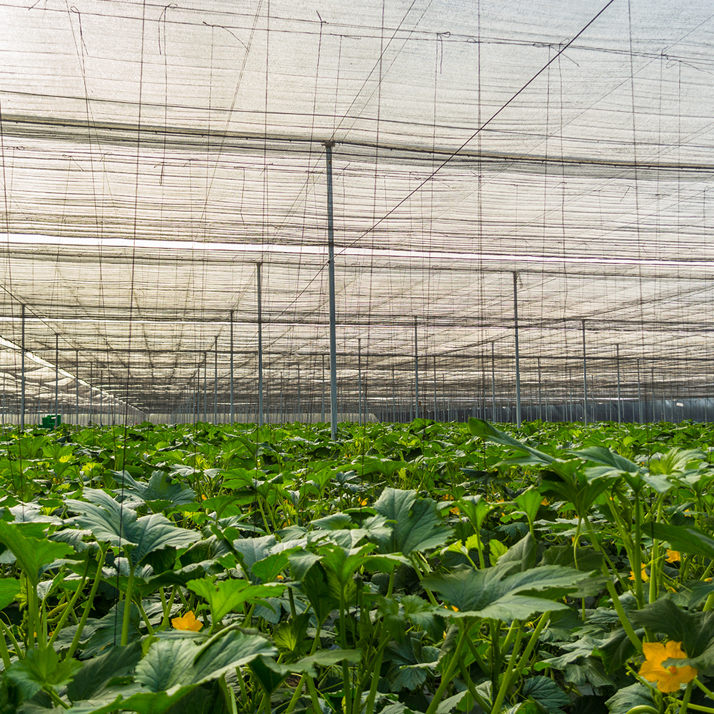
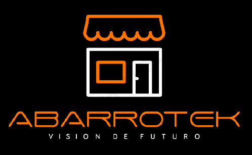
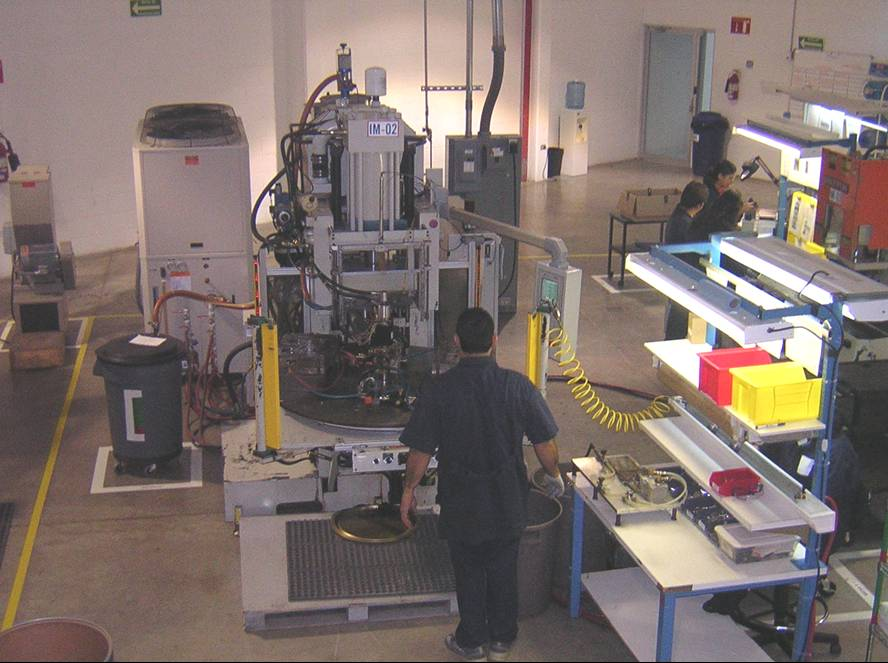
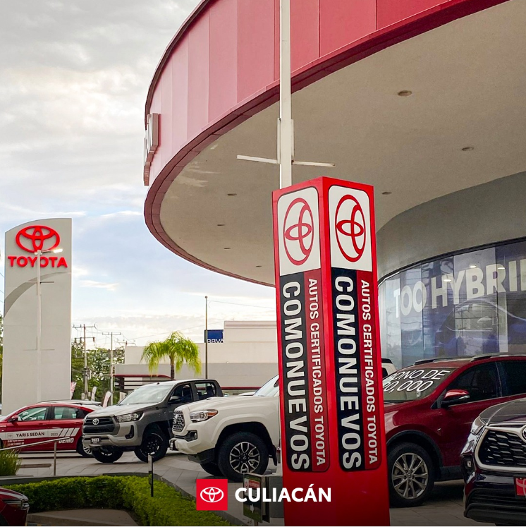

En el modelo Tec21 casi cada periodo de 5 semanas se lleva a cabo un reto. Durante la etapa de exploración (3 semestres) los retos son proyectos retadores e innovadores que se realizan en los salones de bloques. En el etapa de enfoque (3 semestres) los retos están vinculados con un socio formador. En estos retos los estudiantes visitan la empresa, analizan los procesos, realizan un diagnóstico y proponen mejoras viables de implementar.
Para facilitar la comunicación entre profesores, alumnos y el socio formador generamos sitios en Google Sites con una descripción y cronograma del reto, un calendario para registrar y visualizar visitas o eventos relevantes, y al final del reto publicamos las presentaciones y reportes correspondientes. Selecciona las siguientes ligas si deseas ver este material. Algunos retos tienen contraseña por cuestiones de confiabilidad con los socios formadores.

Socio formador:Viva Orgánica
Tema: Balanced Scorecard y Series de Tiempo (Box-Jenkins)
Unidad de formación: IN2004B Generación de valor con analítica de datos
Semestre: 5 (Agosto-Septiembre 2023)
Reto: Crear modelos predictivos para proyectar la venta por cultivo, crear un plan de producción para cumplir con la demanda comercial anual, estimar el total venta semanal en riesgo de incumplimiento por falta de mano de obra y reproyectar el rendimiento semanal de la etapa planeada.
Sitio: https://sites.google.com/tec.mx/tecvo/inicio

Vinculación:MIT LIFT LAB / Secretaría de Economía de Sinaloa
Tema: Ciencia de datos
Unidad de formación: IN1002B Desarrollo de proyectos de análisis de datos
Semestre: 3 (Noviembre-Diciembre 2022)
Reto:Innovando el canal de distribución de las tienditas y changarros en México. Desarrolla modelos de regresión para explicar su longevidad, el perfil de los clientes o el servicio de los proveedores.
Canva: Presentación FEST 2023
Sitio: https://sites.google.com/tec.mx/tecvo/inicio

Socio formador:InserTech
Tema: Overall Eficiency Equipment (OEE)
Unidad de formación: IN2008B Aseguramiento de la excelencia operacional
Semestre: 6 (segundo tercio)
Sitio: https://sites.google.com/tec.mx/tec-insertech/inicio

Socio formador:Grupo Premier
Tema: Metologías de mejora continua (Ciclo de Deming)
Unidad de formación: IN2002B Mejora de un proceso organizacional con métodos estadísticos
Semestre: 4 (segundo tercio)
Sitio: https://sites.google.com/tec.mx/tec-grupopremier/inicio